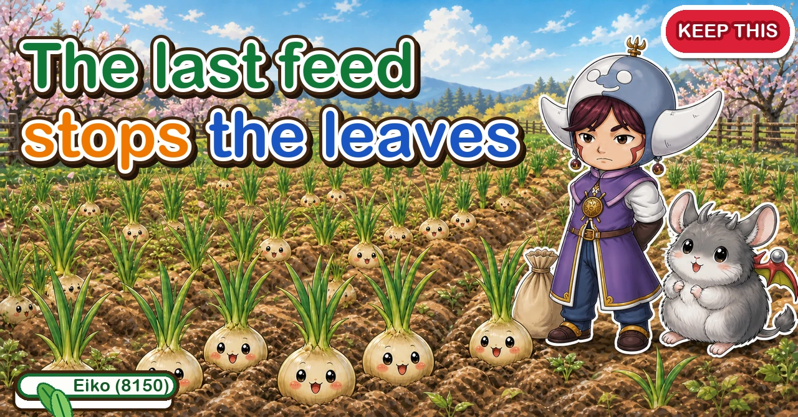
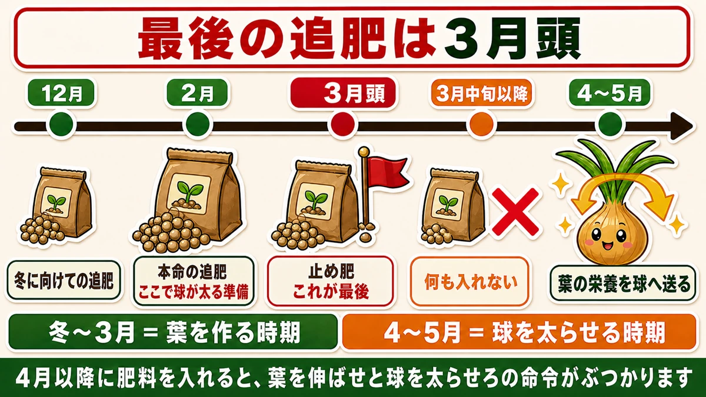
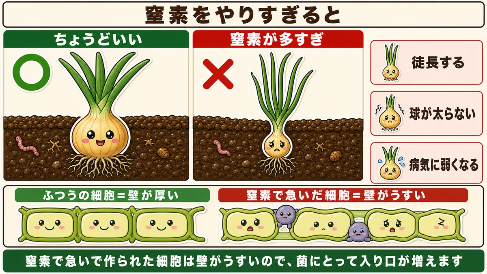
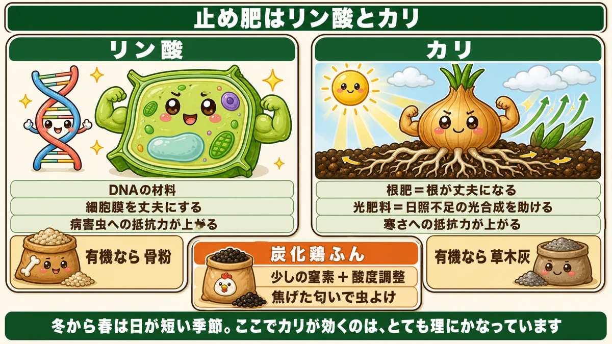
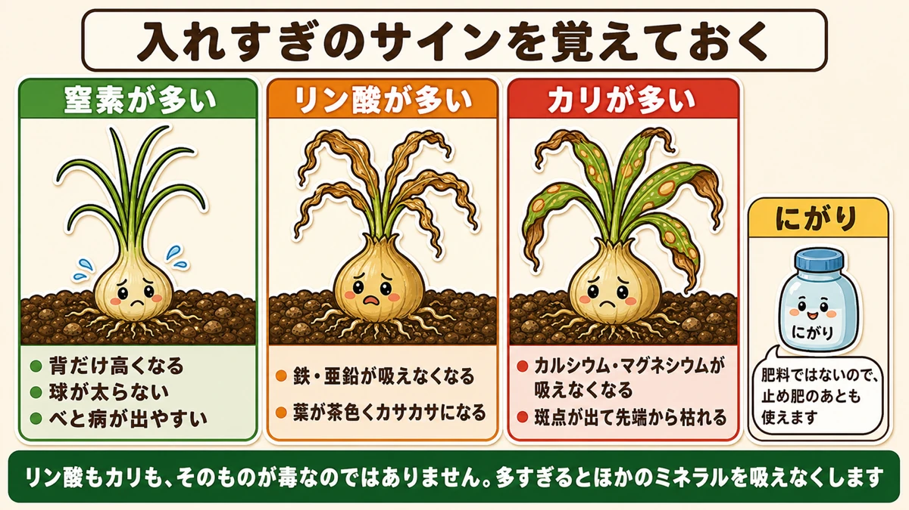

Feed onions late and they never bulk up 🧅 The idea of a final feed

🗨️ "My onions finished small."
🗨️ "Magnificent leaves, and no bulb."
🗨️ "I thought more feed meant bigger onions."
Hello, I'm Eiko. Eight years of growing vegetables organically and without pesticides, and a teaching licence in science.
Autumn-planted onions start moving again towards the end of winter. Growth restarts, the leaves lengthen, and this is where the crop is decided — and where the wrong feed loses it.
The point, up front:
Once early spring arrives, the next feed is the last one. And it must not be nitrogen.
That last application has a name: the stopping feed. It is, exactly as it sounds, the feed that stops things ☺️
What a "final feed" means

What this diagram says （図解の文字）
- The last top-dressing is at the start of spring
- Early winter — feed for the winter ／ late winter — the main feed, preparing the bulb to swell
- Start of spring — the stopping feed, the last one ／ × after that, nothing
- Mid spring to early summer — the leaves' reserves move into the bulb
- Winter to early spring = making leaves. Mid spring onward = filling the bulb
- Feed after the switch and "grow leaves" and "fill the bulb" collide
An onion's feeding schedule runs roughly:
- Early winter — the feed that carries it through the cold
- Late winter — the main one, preparing the bulb to swell
- Start of spring — the stopping feed. The last
- After that — nothing at all
The name carries two meanings: stop feeding here, and stop the leaves growing and switch the plant over to filling the bulb.
Why it has to stop
An onion's season is in two halves:
- Winter to early spring — making leaves
- Mid spring to early summer — moving what the leaves made into the bulb
The bulb fills in the second half, using reserves the leaves banked in the first.
So feed arriving in the second half puts the plant in difficulty. "Keep making leaves" and "no, fill the bulb now" are two instructions at once — and it does both badly.
What too much nitrogen does

What this diagram says （図解の文字）
- When there's too much nitrogen
- ○ about right ／ × too much nitrogen — it runs to leaf ／ the bulb doesn't fill ／ it becomes prone to disease
- A normal cell = thick walls ／ a cell rushed by nitrogen = thin walls
- Cells built in a hurry have thin walls, so fungi gain more entrances
Of the three main nutrients, nitrogen is the one that grows leaves and stems. Too much of it and an onion:
- runs to tall, soft leaf
- doesn't fill the bulb
- catches disease easily
- keeps badly even if you do get a crop
"More feed, bigger plant" is a rule for leafy crops. With anything that fills a bulb or a fruit, it reverses partway through the season.
Why it weakens the plant against disease
Because cells built quickly under high nitrogen have thin, soft walls. In human terms, a sudden growth spurt with nothing behind it.
For a fungus, that's more doors. Which is why, in the same bed and the same variety, downy mildew appears first on the plants that got the most nitrogen.
So what goes on instead

What this diagram says （図解の文字）
- The stopping feed is phosphorus and potassium
- Phosphorus — the material of DNA ／ strengthens cell membranes ／ raises resistance to pests and disease ／ organic: bone meal
- Potassium — the "root feed" ／ the "light fertiliser" — supports photosynthesis when light is short ／ raises cold tolerance ／ organic: wood ash
- Carbonised poultry manure — a little nitrogen plus pH correction ／ the burnt smell deters insects
- Winter into spring is the short-daylight season, which is exactly when potassium earns its place
Phosphorus and potassium. Hold the nitrogen back.
Phosphorus — it strengthens the cell wall
Phosphorus does a fundamental job in any living thing: it is a component of DNA. Nothing can build new cells without it, and it's deeply involved in respiration as well.
For an onion the relevant part is that it strengthens cell membranes.
Nitrogen thins the walls. Phosphorus does the opposite — it produces properly built cells, and resistance to pests and disease rises as a result.
Potassium — the root feed, and the "light fertiliser"
Potassium has two nicknames. One is the root feed — it strengthens roots, and strong roots take up both water and nutrients better.
The other is more interesting: the light fertiliser.
Potassium supports photosynthesis when daylight is short. Winter into spring is exactly that — short days, a lot of cloud, not much light for an onion. Which makes potassium's timing very sensible indeed.
It also raises cold tolerance, which still matters when late cold snaps arrive.
The organic versions
"Phosphorus and potassium" suggests bagged synthetic feeds. They work, but there are organic equivalents:
- Phosphorus → bone meal
- Potassium → wood ash
- A little nitrogen plus pH correction → carbonised poultry manure
Wood ash is simply burnt leaves and prunings. You can buy it; you can also make it. I save the ash from burning at the end of the garden.
How much
- Slow-release types — about 30 g per square metre
- Fast-acting types — about 50 g per square metre
30 g is a generous handful. If it feels like too much, use the smaller figure. Onion failures are overwhelmingly from too much, not too little.
The trap nobody mentions
Learn the over-application signs

What this diagram says （図解の文字）
- Learn the signs of too much
- Too much nitrogen — only the height increases ／ the bulb doesn't fill ／ downy mildew appears readily
- Too much phosphorus — iron and zinc can't be taken up ／ leaves go brown and papery
- Too much potassium — calcium and magnesium can't be taken up ／ spots appear and the tips die back
- Nigari — not a fertiliser, so it can be used after the stopping feed
The interesting thing is that neither phosphorus nor potassium is itself toxic. In excess, they block the uptake of other minerals. It's a competition, not a poisoning.
Stop the feed, keep the minerals
So what if you've overdone it? I use nigari — the magnesium-rich brine used to set tofu. It carries magnesium, calcium and a range of trace elements, and fills the gaps that excess phosphorus or potassium create.
And the key point: nigari is not a fertiliser. No nitrogen, no phosphorus, no potassium. So it can be used after the stopping feed. "Stop the fertiliser; keep the minerals" is a workable position.
You dilute it and spray. It isn't onion-specific — I do the same on summer crops.
After the final feed
Weed
From early spring the weeds arrive all at once.
Onions are shallow-rooted, spreading their roots near the surface. Lose that ground to weeds and the onion simply loses — light as well as space.
So: after the stopping feed, the next job is weeding. It matters more than any feeding does.
Even with mulch down, weeds come up through the planting holes. Pull them individually by hand. The roots are shallow, so hoeing cuts onion roots along with the weeds.
Find the bolters early
Occasionally a plant runs to flower. A hard stem rises straight out of the centre of the leaves, noticeably ridged to the touch compared with the leaves around it.
That bulb will not grow any further — the flower takes everything.
Pinch the flower bud out when you find it. The bulb stops growing, but it rots less readily. And since a bolted onion doesn't keep, the right move is to eat it soon.
The cause is going into winter with too large a plant. Choosing big plants at planting time produces this. Worth a note for next year.
About the late-winter diseases
The common onion diseases are downy mildew and rust, and they start appearing towards the end of winter — whitish or orange spots on the leaves.
Finding them is alarming. In your first year you will conclude the crop is finished.
It isn't, though
By that point leaf growth is nearly over and the bulb has started filling.
In other words, by the time the disease shows, most of the match has been played. Some infection and the bulbs still fill. In a year when mildew appeared in my garden, I lifted normal-sized onions.
And onions need almost nothing in the way of insect control. For growing without sprays, there's hardly a better crop.
To sum up
- ✅ The first feed of spring is the last one — the stopping feed
- ✅ After it, nothing
- ✅ Leaves until early spring; the bulb fills from mid spring on the leaves' reserves
- ✅ Excess nitrogen gives tall soft growth, no bulb, and disease
- ✅ Cells rushed by nitrogen have thin walls — more doors for fungi
- ✅ The stopping feed is phosphorus and potassium
- ✅ Phosphorus = DNA material; strengthens membranes and raises resistance
- ✅ Potassium = root feed and "light fertiliser"; helps photosynthesis in short daylight and improves cold tolerance
- ✅ Organic: bone meal / wood ash / carbonised poultry manure
- ✅ About 30 g per square metre. When in doubt, less
- ✅ P and K feeds acidify — correct with carbonised poultry manure
- ✅ Too much P: brown papery leaves. Too much K: spots and dying tips
- ✅ Nigari isn't a fertiliser, so it's usable after the stopping feed
- ✅ Mildew and rust appear late winter — by then the bulb is already filling. Don't panic
You don't have to do all of it. Write "onions — last feed" on the calendar at the start of spring. Drawing that one line changes the crop 🧅
Thank you for reading!